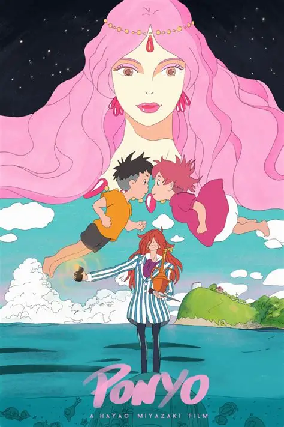

"Ponyo - Uma Amizade que Veio do Mar" (2008), do Studio Ghibli, conta a história de Sosuke, um menino de 5 anos que liberta uma peixinho dourado chamada Ponyo, presa num pote. Ponyo, filha de um feiticeiro do mar, deseja tornar-se humana após se apaixonar por Sosuke, mas sua magia desequilibra a natureza e causa inundações.
alugar